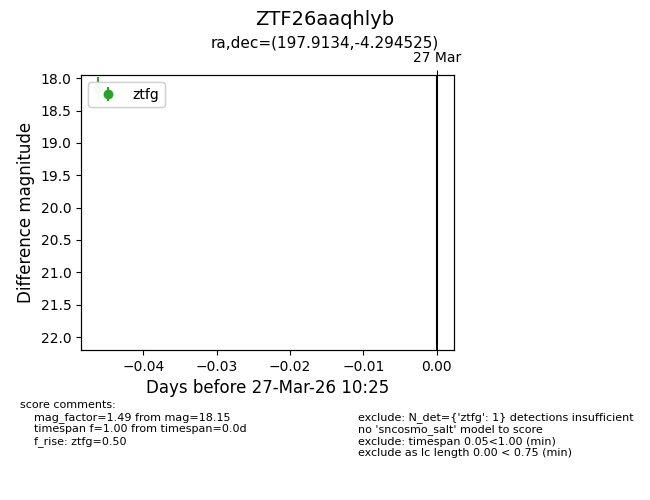
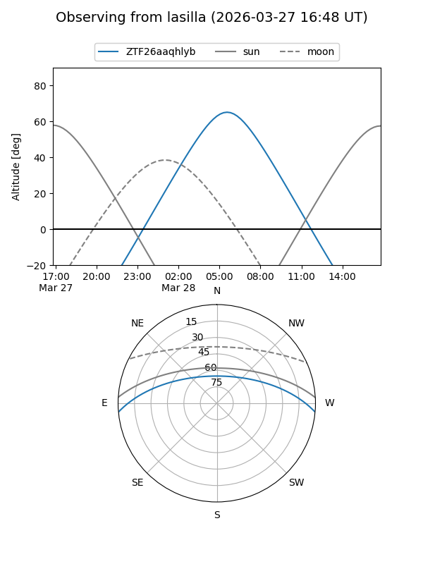
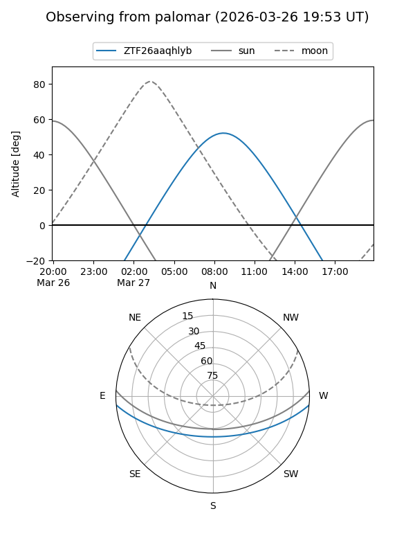

ZTF26aaqhlyb
Target ZTF26aaqhlyb at 2026-03-27 10:28
Aliases and brokers:
FINK: link
Lasair: link
ALeRCE: link
alt names
ZTF26aaqhlyb (ztf,fink_ztf)
Coordinates:
equatorial (ra, dec) = 197.9134,-4.29453
equatorial (HMS+DMS) = 13:11:39.20,-04:17:40.29
galactic (l, b) = (312.5281,+58.20007)
Flags:
Photometry:
last ztfg=18.15
1 ztfg detections
Lightcurve

Visibility


Additional plots